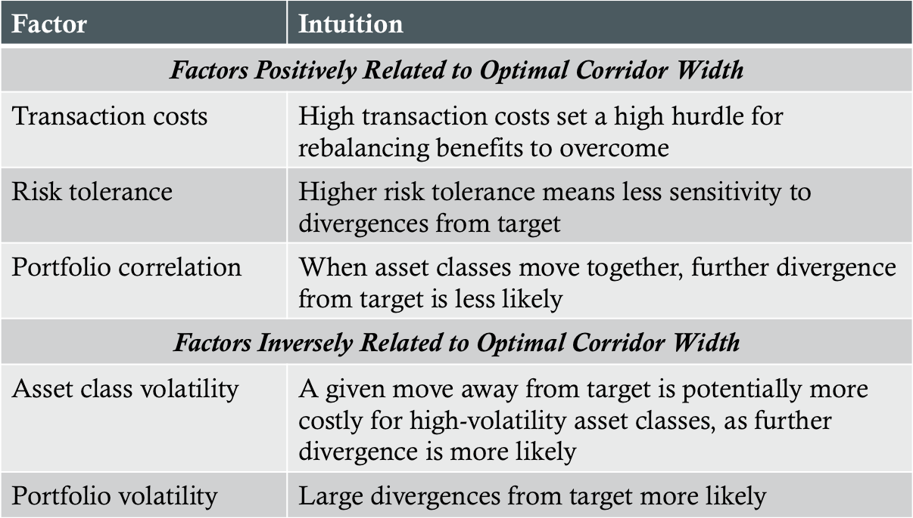
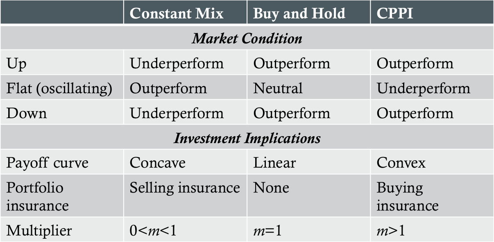

Monitoring
- Investor circumstances
- Investment policy statement
- Strategic asset allocation
- Individual portfolio holdings
- Market and economic changes
- Strategic asset allocation
- Tactical asset allocation
- Style/sector exposure changes
- Individual portfolio holdings
- Portfolio
- Holdings
- Strategic asset allocation
IPS Changes
- Investor circumstances/wealth
- Liquidity requirements
- Time horizons
- Tax circumstances
- Laws and regulations
- Unique circumstances
Market and Economic Changes
- Asset risk attributes
- Market cycles
- Central bank policy
- Yield curve and inflation
Portfolio Changes
- Events and trends affect the prospects of individual holdings and asset classes
- Changes in asset values that create unintended divergences from strategic asset allocation
Portfolio Rebalancing
- Benefits
- Tracks optimal strategic asset allocation
- Counteracts drift towards higher risk assets
- Maintains desired risk exposures
- Costs
- Transaction costs
- Tax costs
- Disciplines
- Calendar rebalancing
- Percentage-of-portfolio rebalancing
Factors Affecting Optimal Corridor Width

Perold-Sharpe Analysis
